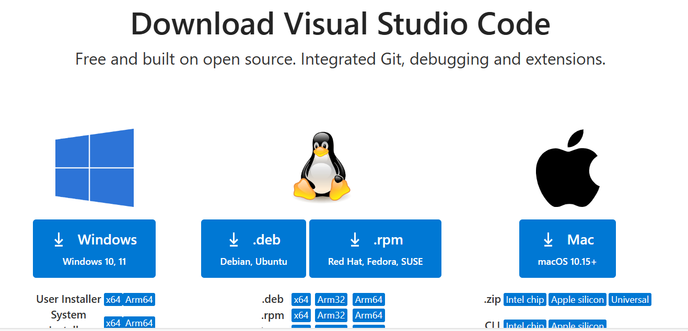

In this tutorial, I explain two ways to install g++ compiler:
MinGW (Minimalist GUN for Windows, originally called mingw32) is a native Windows port of the GNU Compiler Collection (GCC) that provides header files and free distributable import libraries for creating native Windows applications. Note that all the programs produced under MinGW are 32-bit executables, but they can be used in 32-bit and 64-bit versions of Windows.
MinGW-w64 is an advancement of the original MinGW project. It was forked in 2007 in order to provide support for 64 bits and new APIs. Note that MinGW-w64 supports binaries native to Windows 64-bit and 32-bit operating systems.
Installing g++ compiler use MinGW Installation Manager
Once the file is downloaded. Open the mingw-get-setup.exe file then click on [Install]
I am going to install MinGW under C: directory, click on [continue]
Wait MinGW to install then click on [continue]
In MinGW Installation Manager select mingw32-base-bin by clicking on the square control beside the package name. You should see as below:
Also, you should select all the following package as below:
On the menu bar, select InstallationApply Changes as shown below:
Click on the Apply as shown below:
Finally, After the installation finish click on Close
After that, go to the installation directory [in my caseC:\MinGW\bin] and copy the directory of the bin folder as shown below:
Go to the setting and write env on the search bar, select Edit environment variables for your account as shown below:
Select path and click on Edit as shown below:
Click on New to add your copied MinGW path [ in my caseC:\MinGW\bin ]
Finally click on OK OK
Installing g++ compiler use MinGW-w64
MinGW-w64 comes in three flavors for Windows: GitHub, WinLibs, or MSYS2. Here we will use the WinLibs flavor (a standalone build of GCC and MinGW-w64 for Windows).
Visit the website WinLibs. Here we will download release versions of UCRT (Univarsal C Runtime) with the threading library POSIX threads/pthread.h. Under UCRT, select the GCC version with POSIX threads. For example, click on Win32 (without LLVM/Clang/LLD/LLDB) or Win64 (without LLVM/Clang/LLD/LLDB) based on your system as shown below, or download GCC 14.2.0 (with POSIX threads) directly from here: Win32 or Win64
Extract the Winlibs downloaded file to the C: directory, as shown below.
Visit the website VS code Click on Windows to download VS code for Windows, as shown below

After the download finished open the VSCodeUserSetup executable file, when it open select I accept the agreement then click on Next
Select all the option as seen below
Finally we are ready to install the VS code, click on install and wait untail the setup finish
On the Vs code, on the left-hand side, click on extension then in the search bar, write C++ select C/C++ and click on Install as shown below
Close Vs code
Running C++ parallel code on VS code
Right click on the Windows button or press windows + x then select Windows PowerShell Admin as shown below
Navigate to D: directory by write cd d: as shown below
Then make directory named Parallel-codes [mkdir Parallel-codes] as shown below
Then navigate to the directory
Write code . to open VS code on the d:\Parallel-codes directory
After VS code open, create new file name it fibo.cpp and write Fibonacci code in the end of Lab(1) save fibo.cpp,then on the top bar select on … Terminal New Terminal. As shown below
Before to add pthread.h header file you need to install pthreads library also known as POSIX threads, which is provides a way to create and manage threads in multi-threaded program. To install the library use mingw-get command and write mingw-get install pthreads on the terminal Skip this step if you are installing g++ compiler use MinGW-w64
Compile the fibo.cpp program. Write this command: g++ -o fibo -pthread fibo.cpp on the terminal. Let us explain the command in detail: g++: GUN Compiler Collection for c++ -o fibo: -o flag to create the output file named fibo -pthread flag: tell the compiler to link with the pthread library fibo.cpp: the name of the program Note that: if you want to use openMP on your program [omp.h header file]. You need to add [-fopenmp] flag [g++ -o out –fopenmp program.cpp] to compile the program.
Finally write ./fibo on the terminal to run fibo program